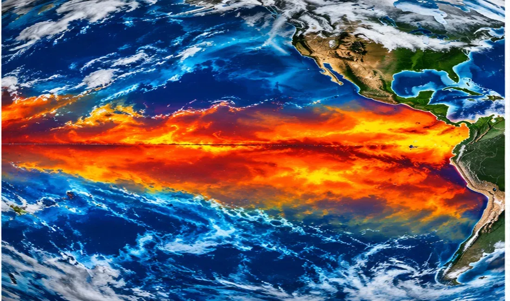

SUPER EL NIÑO GROWING!
NOAA expects a strong-to-very-strong event this winter. Here is what it could mean for Texas.

A powerful El Niño is developing across the tropical Pacific, with the potential to shape winter weather across the United States.
In its October 8 ENSO diagnostic discussion, NOAA said El Niño was strengthening and that strong-to-very-strong conditions were likely through January–March 2027, with a greater than 83 percent probability. NOAA also discussed the possibility of a historically strong episode, while emphasizing uncertainty in specific local impacts.
El Niño begins with unusually warm waters in the central and eastern equatorial Pacific. Those ocean temperatures alter tropical rainfall and atmospheric circulation, affecting the position and strength of the jet stream across North America.
Historically, El Niño winters can favor a more active southern storm track and wetter conditions in parts of the southern United States, including Texas. That is a seasonal tendency, not a guarantee of rainfall in any one community or a promise of snow or ice.
The developing polar-vortex disturbance adds another layer of uncertainty. Texas News Studio will monitor NOAA outlooks, forecast model trends, and National Weather Service alerts as winter approaches.